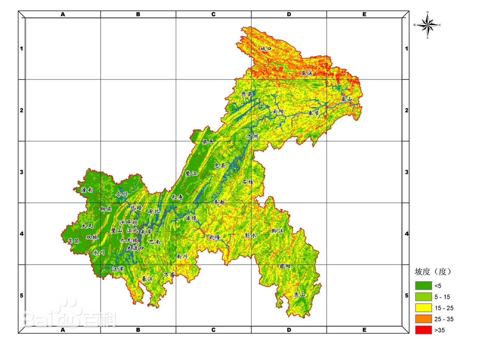
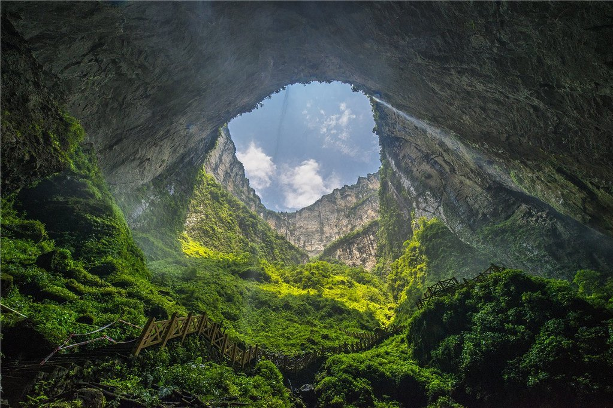

地理环境
位置境域
重庆市北有大巴山，东有巫山，东南有武陵山，南有大娄山。重庆主城区海拔高度多在168～400米之间。市内最高峰为巫溪县东部边缘的界梁山主峰阴条岭，海拔2796.8米；最低为巫山县长江水面，海拔73.1米。重庆海拔高差2723.7米。境内山高谷深，沟壑纵横，山地面积占76%，丘陵占22%，河谷平坝仅占2%。其中，海拔500米以下的面积3.18万平方千米，占幅员面积38.61%；海拔500～800米的2.09万平方千米，占幅员面积的25.41%；海拔800～1200米的1.68万平方千米，占幅员面积的20.42%；海拔1200米以上的1.28万平方千米，占幅员面积的15.56%。
重庆市地势由南北向长江河谷逐级降低，西北部和中部以丘陵、低山为主，东南部靠大巴山和武陵山两座大山脉，坡地较多，有“山城”之称。总的地势是东南部、东北部高，中部和西部低，由南北向长江河谷逐级降低。
重庆市地貌结构复杂，呈现出四大特点：一是地势起伏大。东部、南部、东南部地势高，西部地势低。东部最高处为大巴山的川鄂岭，最低处为巫山长江水面。二是地貌类型多样。以山地为主，有中山、低山、高丘陵、中丘陵、低丘陵、缓丘陵、台地和平坝等八大类。三是地貌形态组合的地区分异明显。华蓥山—巴岳山以西为丘陵地貌，华蓥山—方斗山之间为平行岭谷区，北部为大巴山山区，东部、东南部、南部属巫山、大娄山山区。四是喀斯特地貌分布广泛。发育有具特色的喀斯特槽谷景观，典型的有石林、峰林、洼地、残丘、溶洞、暗河、峡谷、天坑地缝等喀斯特景观。
气候
重庆市属亚热带季风性湿润气候，年平均气温16~18℃，长江河谷的巴南、綦江、云阳等地达18.5℃以上，东南部的黔江、酉阳等地14~16℃，东北部海拔较高的城口仅13.7℃，最热月份平均气温26~29℃，最冷月平均气温4~8℃，采用候温法可以明显地划分四季。年平均降水量较丰富，大部分地区在1000~1350毫米，降水多集中在5~9月，占全年总降水量的70%左右。

重庆市年平均相对湿度多在70%~80%，在中国属高湿区。年日照时数1000~1400小时，日照百分率仅为25%~35%，为中国年日照最少的地区之一，冬、春季日照更少，仅占全年的35%左右。主要气候特点可以概括为：冬暖春早，夏热秋凉，四季分明，无霜期长；空气湿润，降水丰沛；太阳辐射弱，日照时间短；多云雾，少霜雪；光温水同季，立体气候显著，气候资源丰富，气象灾难频繁。
重庆市在地形和气候双重作用下，春夏之交夜雨尤甚，因此有"巴山夜雨"之说，有山水园林之风光；多雾，素有“雾重庆”“雾都”之称。年平均雾日是104天，有世界雾都之称的英国伦敦年平均雾日只有94天，远东雾都的日本东京也只有55天。璧山区的云雾山全年雾日多达204天，堪称“世界之最”。
水文
重庆市的主要河流有长江、嘉陵江、乌江、涪江、綦江、大宁河、阿蓬江、酉水河等。长江干流自西向东横贯全境，流程长达665千米，横穿巫山三个背斜，形成著名的瞿塘峡、巫峡和湖北的西陵峡，即举世闻名的长江三峡；嘉陵江自西北而来，三折于渝中区入长江，乌江于涪陵区汇入长江，有沥鼻峡、温塘峡、观音峡，即嘉陵江小三峡。
据《重庆市水资源公报（2020年）》显示，重庆全市水资源总量为766.8559亿立方米，折合径流深930.6毫米。地表水资源量766.8559亿立方米，地下水资源量128.6877亿立方米，产水模数93.06万立方米/平方公里。
自然灾害
重庆市自然灾害种类主要有干旱、寒潮、阴雨低温、暴雨、冰雹和浓雾等大气圈灾害；滑坡、崩塌和地震等岩石圈灾害；洪涝、水土流失等水圈灾害，洪涝灾害有过境洪水型、本地暴雨型和混合型三种，多发生于降雨集中的4—10月。
2022年9月20日，根据气象干旱监测，重庆等地仍然存在中度至重度气象干旱。